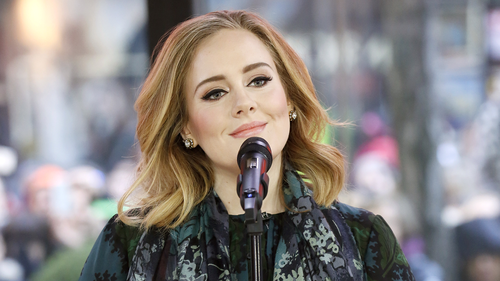
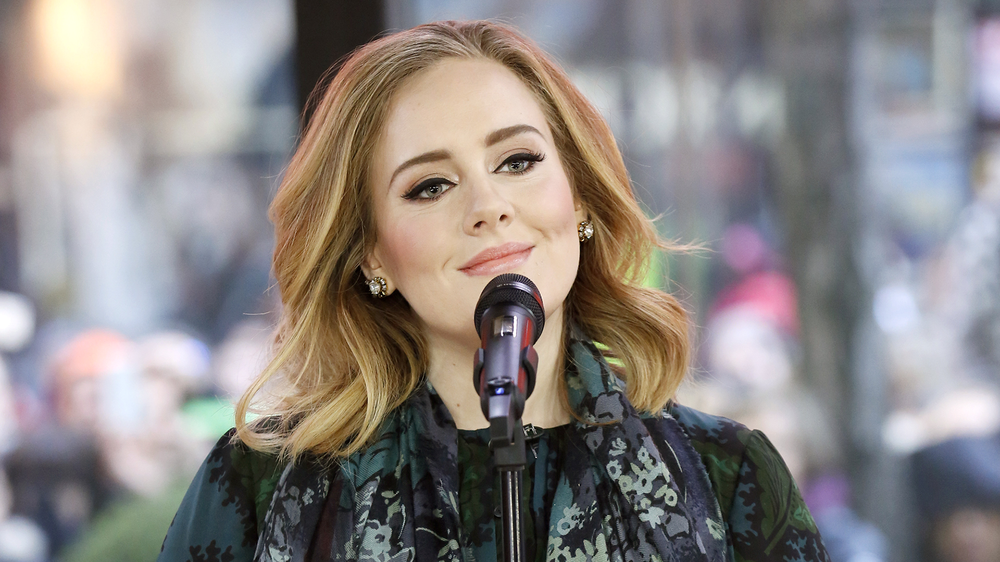

Kim jestem?
Jestem Adele, a właściwie Adele Laurie Blue Adkins, mam 34 lata i pochodzę z Londynu. Zaczęłam śpiewać w wieku czterech lat, kiedy to zafascynowałam się brzmieniem różnych głosów. Lubiłam słuchać, jak tony głosu zmieniają się od gniewnych do podnieconych, czy od radosnych do smutnych. W dzieciństwie częściej śpiewałam, niż czytałam. Pierwszym koncertem, na który zabrała mnie moja mama, był występ zespołu The Cure w Funsbury Park. Kilka lat później umieściłam jedną z ich piosenek, „Lovesong”, na swojej drugiej płycie zatytułowanej 21. Jako pięciolatka zaczęłam występować na przyjęciach wydawanych przez moją matkę. W 1997, mając 9 lat, przeprowadziłam się z nią do Brighton. Dwa lata później obie przeniosłyśmy się do West Norwood, które okazało się inspiracją do mojego utworu „Hometown Glory”.
Jednym z najbardziej decydujących w moim życiu momentów był występ piosenkarki Pink w Brixton Academy: To była piosenka „Missundaztood”, więc miałam jakieś 13 albo 14 lat. Nigdy nie słyszałam w pomieszczeniu kogoś, kto tak śpiewa. Pamiętam to uczucie, jakbym była w tunelu aerodynamicznym, jej głos po prostu mnie uderzył. To było niesamowite. Duży wpływ na moje zauroczenie muzyką oraz późniejszą twórczość mieli także artyści, tacy jak zespół The Beautiful South, East 17, Gabrielle, Spice Girls, Tom Jones, Etta James czy Ella Fitzgerald. W 2003 zostałam przyjęta do Brytyjskiej Szkoły Sztuki Widowiskowej i Technologii. Ukończyłam naukę w szkole w maju 2006, a po ukończeniu szkoły planowałam zostać szefem działu artystycznego (tzw. A&R) w wytwórni muzycznej.
Ciekawostki
W czasie amerykańskiej trasy koncertowej straciłam głos. Powodem były infekcja gardła i ogólne zmęczenie. Wkrótce rozpoznano krwotok ze strun głosowych i nakazano milczenie przez miesiąc. Przeszłam zabieg chirurgiczny w Massachusetts.
Zostałam pierwszym żyjącym artystą od czasów The Beatles, którego dwa kolejne albumy i single znalazły się w pierwszej piątce notowań brytyjskiego rynku muzycznego.
Zdobyłam aż 15 nagród Grammy, co czyni mnie czwartą najbardziej utalentowaną artystką.
Galeria zdjęć
 
